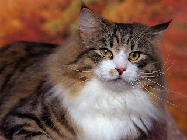

Cat Fancy Event 2014
The 115th annual Cat Fancy Event is being held in New York City on December 21st. This is the fanciest cat event of the year, starring over 300 different cats. This event was made to show America how great cats really are. There will be treats at the walk in, and for the cat owners there will be a buffet in the lounge. We thank you for coming to our event site, and hope to see you on December 21st. Thank you.

Featured Cats
- George C.
- Sam F.
- Doug T.
- Sally Z.


These cats will be the showrunners this year. George has a long history in cat events, and is looking forward to this year's Cat Fancy Event. Sam is a world-class runner, and will be showing his new techniques. Doug likes to lay around, and will practice his abilities. Sally was invited because her mom made a fit about not coming.